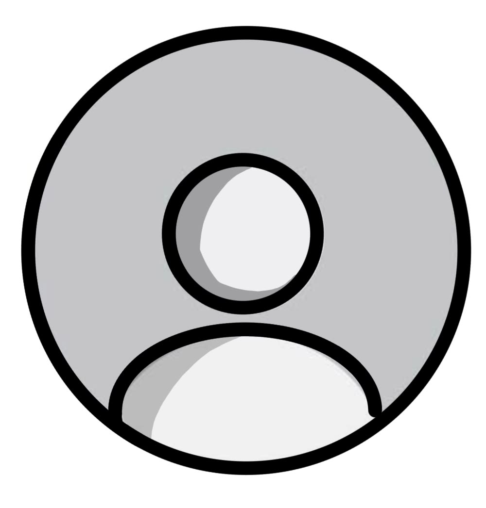

Mahasiswa Informatika & Pekerja Lepas Kreatif
Mahasiswa Informatika yang aktif bekerja lepas di industri kreatif dengan fokus pada desain grafis, fotografi, dan videografi. Terbiasa membagi waktu secara disiplin antara perkuliahan dan proyek klien, serta memiliki ketertarikan tinggi pada pemrograman web dan pengembangan software.
Menangani proyek dokumentasi foto, fotografi produk, serta produksi dan pengeditan video komersial.
Merencanakan kampanye promosi bulanan dan memproduksi aset visual konten media sosial harian.
Merancang materi visual pembukaan cabang baru, mencakup konten sosial media dan materi cetak promosi.
Melakukan sesi pemotretan studio, retouching foto, dan mengarahkan klien selama pemotretan.
Membuat konten promosi feeds/reels dan mendesain kebutuhan cetak kemasan dan materi display toko.
Photoshop, Illustrator, Canva
Adobe Lightroom, Retouching
Premiere Pro, DaVinci, CapCut
Python, Java, HTML & CSS